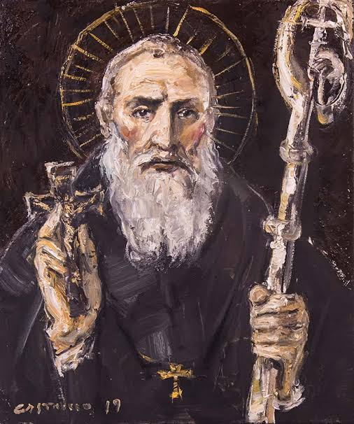
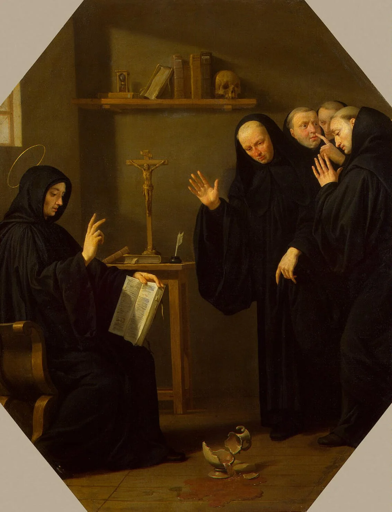

The Saint
St. Benedict was born in the year 480 CE in Nursia, Italy. He was the founder of the Benedictine religous order and the became the father of Western monasticism. The rule that he established became the norm for monastic living throughout Europe. He was known as a very holy man and he told many young men who wanted to follow him to return to their normal lives because they would not be able to follow his strict way of life. He died in the year 547 in Monte Cassino. His legacy continues to this day with many monasteries obeserving and following his rule.
The Encounter - Poisoned Wine
The enemy tried many ways to take out St. Benedict. When an abbot of a monastery died, the monks went to St. Benedict to persuade him to become their new leader. But he warned them that his way of life was more stricter than theirs. After enough begging he accepted, but just like he said, he was to strict. The other monks thought it was too severe. This made them angry and at the enemy's provaction they tried to poison him. The monks brought him poisoned wine and brought it to him to bless it as was customed but as soon as he did the sign of the cross over the cup, it shattered! He realized why this happened but he was not angry, he felt at peace. He called the monks together and told them, "may almighty God forgive you brothers," and told them that he had told them that his way of life was different than theirs. He told them to find another superior to their liking and follow him, as he no longer was going to lead them.